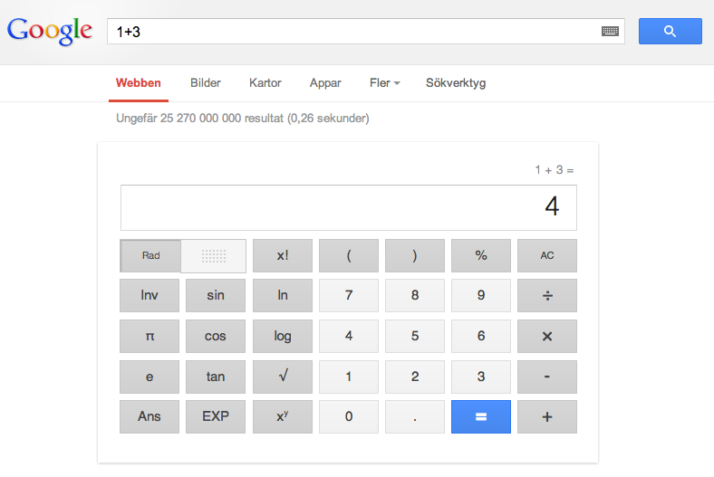
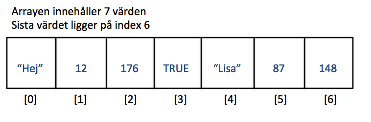

Web Management, 1IK424
Linnéuniversitetet, VT2013
Kursintroduktion
http://orion.lnu.se/pub/education/course/1IK424/VT13/sessions/F01.html

John Häggerud

- Universitetsadjunkt i datavetenskap, HIK 2003
- Kursansvarig, examinator, föreläsare, laborationshandledare
- Skype: john-hik, john.haggerud@lnu.se
Emil Carlsson

- Webbprogrammerare
- Laborationshandledare
- Gillar PHP och reguljära uttryck
- Skype: emil.lnu, E-post: ec222ba@student.lnu.se
VARFÖR ÄR VI HÄR?
- Få förståelse för hur en dynamisk webbapplikation är uppbygd och fungerar
- Få grundläggande för webbutveckling
- Få grundläggande kännedom om serverscriptspråket PHP
- Lära er skapa en dynamisk webbapplikation med hjälp av publiceringssystemet Wordpress
HUR?

Vad som förväntas av dig
Är här för att du vill lära dig!
Erfarenhet av HTML + CSS
Känner igen programatiska termer (variabel, array, if-sats, for-loop ect.)
Klarar av självstudier
Treveckorsreglen
För att bibehålla sin plats i kursen krävs att man
klarar den så kallade treveckorsreglen.
Det innebär...
...att man efter tre veckor (vecka 16) ska ha blivit godkänd på laboration 1...
...annars sker en avregistrering från kursen
Examination
Delkurs 1 - PHP (3 hp)
Betyg: U/G - Noteringar görs om antal lösta extrauppgifter som kan komma att på verka slutbetyget i kursen
Delkurs 2 - Wordpress (2 hp)
Betyg: U/G - Noteringar görs om antal lösta extrauppgifter som kan komma att på verka slutbetyget i kursen
Delkurs 3 - Projektarbete (2.5 hp)
Betyg: U/3/4/5 - Görs gruppvis, samverkan med Morgans kurs, examineras i denna kurs med avseende på wordpressutvecklingen
FRÅGOR???
OK, då kör vi!
Begrepp att reda ut
- Webben och webbapplikationer
- En dynamisk webbapplikations arkitektur
- Klientsida (frontend)
- Serversida (backend)
- Serverscriptspråket PHP
- Skillnad mellan javascript och PHP
- HTTP request och response
- HTML-formulär och "postad" data
-
Webbens utveckling

Vad är menas med en dynamisk webbapplikation?

EN sida som kan påverkas.
Webbsida - En specifik sida du kommer åt via en URL
Webbplats - En samling webbsidor
Webbtjänst - En tjänst som erbjuds via webbplatsen (blocket, recept o.s.v.)
Webbapplikation -
Vad är det som händer när vi "facebookar"?

Vad webbläsaren tolkar

OK. Vi trycker på knappen för att posta vårt inlägg? Sen då?
En webbläsares främsta uppgift är att tolka klientside-kod och presenetra ett gränssnitt för användaren.
Med klientsidekod menar vi främst HTML, CSS och Javascript.
HTML för struktur,
CSS för presentation,
JavaScript för interaktivitet
Webbläsaren bygger ihop ett så kallat HTTP-meddelande
HTTP- beskrivning
Detta http-meddelande innehåller bland annat texten vi vill posta på facebook.
Andra saker som skickas med:
Information om att jag är jag,
SKÄRMDUMP HTTP-meddelandet
Detta skickas till facebooks webbserver (eller rättare sagt en av deras webbservrar)
Man kallar detta meddelande för ett HTTP-request med HTTP metoden post
"Vi skickar en förfrågan om att få posta data/information på facebooks server"
Internet - www
Meddelandet passerar datorer, nätverk, sladdar, routrar, servrar o.s.v.
Traceroute till facebook ger X antal servrar
Till slut hamnar vi hos facebook webbserver. Den står i USA? Eller luleå?
Webbservern - Backend
En webbserver förstår HTTP-meddelandet som webbläsaren skickar
Vem är användaren? - PHP-kod läser av meddelandet, kollar i sin databas
Vad vill användaren göra? - POST, med data
Utför detta. Spara informationen som skickas i (rätt) databas.
Skicka tillbaka ett svar.
SKÄRMDUMP HTTP-meddelandet
Till slut hamnar vi hos facebook webbserver. Den står i USA? Eller luleå?
Vad är det vi ska koncentrera oss på?
FÖRKLARA webbapplikationens roll,
vad vi ska lära oss
Vad vi inte ska lära oss (DATABAS, modellering eller kod mot)
<<<<<<< HEAD
Problem vid webbutveckling
FÖRKLARA
* 3.14
=======
Jo, men vad ska vi GÖRA?
Kursens första del handlar om PHP-programmering.
PHP körs på en webbserver, en specifik dator med specifika program som levererar webbsidor till webbläsare
Ni ska alltså skriva kod som läggs på en webbserver och sen dynamiskt genererar webbsidor (HTML, CSS och javascript)
????
Se inspelad film om hur du jobbar mot vår webbserver.
>>>>>>> Dummy commit
PHP - Vad är det?
<<<<<<< HEAD
PHP är ett serverscriptspråk, exekveras på en webbserver, generar (oftast) HTML som skickas till klienten
BILD PÅ HUR ETT SEVERSCRIP
Vad är det för mening med att kunna PHP?
- Förståelse för utvecklingsprocessen - programmering
- Wordpress är byggt på PHP
- Vanligt serverscriptspråk idagsläget - stort stöd på webbhotell
- Wikipedia, facebook, 65%?
- Det finns flera serverscriptspråk, C# (ASP.NET), Ruby, Python o.s.v.
=======
PHP är ett serverscriptspråk
Ett av de vanligaste, stort stöd på många webbhotell
PHP är fritt/gratis att använda
Wordpress är skrivet i PHP
OBS! Det finns flera serverscriptspråk, C# (ASP.NET), Ruby, Python o.s.v.
>>>>>>> Dummy commit
PHP - Lite historik
PHP was originally created by Rasmus Lerdorf in 1995.
<<<<<<< HEAD
Webben hade ej exploderat - Orsak till dagens populär
While PHP originally stood for Personal Home Page, it is now said to stand for PHP: Hypertext Preprocessor
=======
VISA BILDEN MED TIDSAXLEN
Zeev Suraski and Andi Gutmans rewrote the parser in 1997 and formed the base of PHP 3
While PHP originally stood for Personal Home Page,[8] it is now said to stand for PHP: Hypertext Preprocessor
>>>>>>> Dummy commit
http://sv.wikipedia.org/wiki/PHP
Hur ser det ut?
KODDUMP AV EN WORDPRESSIDA - Gärna komplicerad
Hello World!
<<<<<<< HEAD
Vårt första PHP-exempel!
Låt ditt PHP-script skapa en HTML-sida som skriver ut "Hello World!"
Demo
Example 1
=======
Vad: Vårt första PHP-exempel!
Problem: Låt ditt PHP-script skapa en HTML-sida som skriver ut "Hello World!"
Varför: Förståelse för PHPs uppgift av att rendera HTML och hur HTML och PHP-kod blandas
>>>>>>> Dummy commit
DEMO
Programmeringsrepetition - Variabel
En variabel ses som en tillfällig lagringsplats för ett värde
Variablerna ges unika namn så att man kan referera till dem senare i sin kod
casesensitive d.v.s. message != Message
BILD på ice creame stand?
// Variabel i javascript
var number = 10;
number = number + 20;
alert(number); // Vad innehåller tal för värde?
// Variabel i PHP
$tal = 10;
$tal = $tal + 10;
echo($tal); // Vad kommer skrivas ut?
Vad kommer skrivas ut?
// Variabel i PHP
$tal_x = 10;
$tal_y = $tal_x;
$tal_z = 100;
$resultat = ($tal_x * $tal_y) - $tal_z;
echo($resultat);
Olika typer av variabler
<<<<<<< HEAD
En variabel kan vara av olika datatyper
- integer - heltal
- double - decimaltal
- string - text / tecken
- boolean - sant eller falsk, true eller false, 1 eller 0
- array - en lista med värden
- ...finns fler
=======
En variabel kan vara olika datatyper
integer - heltal
double - decimaltal
string - texttecken
boolean - sant eller falsk, true eller false, 1 eller 0
array - en lista med värden
...finns fler men vi nöjer oss med dessa denna gång.
>>>>>>> Dummy commit
<<<<<<< HEAD
Textsträngar
Textsträngar eller string kan bestå av noll eller flera tecken
Det finns enkla sätt att slå ihop (konkatenering), räkna antal tecken, m.m.
// textsträngar
$sport = "fotboll";
$team = "Tottenham Hotspur";
// I php använder man punkttecken för att slå ihop strängar
$complete_message = $team ." är bra på " .$sport;
echo($complete_message); // Skriver ut: Tottenhamn Hotspur är bra på fotboll
// i Javascript använder man plustecken för att slå ihop strängar, i PHP punkttecken
alert("Hejsan" +" " +"Kerstin");
=======
Textsträngar i PHP
// textsträngar
$message = "Hejsan";
$name = "Kerstin";
// i Javascript använder man plustecken för att slå ihop strängar
alert("Hejsan" +" " +"Kerstin");
>>>>>>> Dummy commit
// I php använder man punkttecket för att slå ihop strängar
$complete_message = $message ." " .$name
echo($complete_message)
<<<<<<< HEAD
Vad skrivs ut?
echo "
=======
Vad kommer skrivas ut.
EXEMPEL MED STRÄNG OCH TAL - KOLLA ÖVER
>>>>>>> Dummy commit
$pris = 400;
$enhet = "kronor"
$moms = 0.25
echo("Varan kostar " .($pris + ($pris * $moms)) .$enhet)
<<<<<<< HEAD
HTML-formulär - Låta användaren styra
BILD PÅ GOOGLES SÖKRUTA
=======
HTML-formulär - Att låta användaren påverka applikationen
För att låta användare "Posta" data till en webbapplikation (din php-skript)
använder man HTML-formulär
BILD på olika typer av formulär
BILD på htmlkod
>>>>>>> Dummy commit
BILD PÅ HUR ETT FORMULÄR ARBETAR
<<<<<<< HEAD
KLIENTSERVER
=======
Koppla HTML-kod till HTTP-meddelande till PHP-script
Diskutera POSTBACK och VANLIG sidhämtning GETBACK
>>>>>>> Dummy commit
DEMO
- Skapa ett HTML-formulär
- Använd PHP för att skriva ut det användaren matar in
1) Skapa ett HTML-formulär
2) Visa några olika kontroller - Koncentrera sig till ett textfield
<<<<<<< HEAD
3) $_POST, posta till en annan sida
4) Skillnad mellan GET och POST
=======
5) Posta till samma sida - Problem ? Vi måste titta OM värdet är satt = Selection
>>>>>>> Dummy commit
5) Posta till samma sida - Problem ? Vi måste titta om värdet är satt = Selection
Selectioner - PHP
<<<<<<< HEAD
Låta användaren styra hur vår webbapplikation ska bete sig.
"OM matar in ett matematiskt uttryck ska en miniräknare visas"

OM == IF
IF-SATS
=======
>>>>>>> Dummy commit
if-sats används för att kontroller om något är sant eller falskt
$tal = 3;
if($tal == 10) {
echo("Talet är tio");
}
elseif($tal == 5) {
echo("Talet är fem");
}
else {
echo("Talet är varken fem eller tio");
}
$_POST och IF
<<<<<<< HEAD
$text = $_POST["text"];
if($text != "") {
// $text är satt
}
else {
// $text är INTE satt
echo "Text är inte satt";
=======
$submit = $_POST["submit"];
if(isSet($submit)) {
// $submit är satt = Knappen är tryckt
}
else {
// $submit är INTE satt = Förmodligen första ången sidan laddas
>>>>>>> Dummy commit
}
<<<<<<< HEAD
DEMO
Addera två av användaren inskrivna tal
1) Två input fält - (använd ej && -- Ge ett felmeddelande om inputen är tom annars lägg ihop dem
2) vad händer om användaren skriver en sträng? - Kolla av om det är ett nummer (visa hur jag hittar det via google)
=======
DEMO
1) utöka med isset och == ""
2) vad händer om användaren skriver en sträng? - Kolla av om det är en sträng is_numeric
3) Men om jag vill kolla flera saker OM detta och OM detta...
>>>>>>> Dummy commit
Logiska uttryck
Något blir sant eller falskt
BILD - algoritm "om tal1 är större än tal2"
Problem: hur avgör vi om något är större?
if($tal > $tal2)
if($tal >= $tal2)
if($tal < $tal2)
if($tal <= $tal2)
<<<<<<< HEAD
Logiska uttryck
- > - Större än
- >= - Större än, lika med
- < - Mindre än
- <= - Mindre än, lika med
- == - Lika med
- != - Ej lika med, skilt från
=======
// Kombinera flera vilkor
if ($tal > $tal2 && $tal < $tal3)
if ($tal > $tal2 || $tal < $tal3)
>>>>>>> Dummy commit
Du gissar
$tal1 = 10;
$tal2 = 15
$tal2 = 10;
if($tal1 <= $tal2) {
echo("Första vilkoret stämmer");
if($tal2 != $tal3) {
echo("Andra vilkoret stämmer");
}
}
<<<<<<< HEAD
Logiska operatorer
// Kombinera flera vilkor
if ($tal > $tal2 && $tal < $tal3)
if ($tal > $tal2 || $tal < $tal3)
Du gissar
GÖT TAL
Itterationer
Att göra något flera gånger
Vi vill skriva ut samma/liknande saker flera gånger
Vanligast är en for-loop
// for-loop
$array = array(1, 20, 4);
// Hur många element/lådor finns det i arrayen
$length_on_array = count($array);
// loopen körs lika många gånger
for($i = 0; $i < $length_on_array; $i++) {
$current_value = $array[$i];
echo($current_value ."<br />");
}
Itterationer
Ett annat sätt är att använda en foreach-loop
foreach($array as $current_value) {
echo($current_value ."
");
}
DEMO
Få php att skapa en HTML-tabell med av användaren inmatade värden för kolumn och rad
=======
Vad kommer skrivas ut?
Gör ett mer avancerat exempel med if-else och olika vilkor som vi går igenom.
>>>>>>> Dummy commit
itteration - om och om och om igen
När man skriver kod är det vanligt att man vill göra något flera gånger.
T.ex. skapa en tabell med 10 rader och 5 kolumner
T.ex. skriva ut saker i en lista/array
T.ex. göra någonting till ett visst tillstånd uppnås
Man pratar om loopar. Vi ska titta på tre olika varianter:
- for-loop
- foreach-loop
- while-loop
Vanligast är for-loopen
for-loopen har man till att upprepa kod ett visst antal gånger
Vi vill skriva ut "hello World!" 10 ggr
Vi vill bara skriva koden echo("Hello World!") en gång
// for-loop
// loopen körs lika många gånger
// 1. Vi skapar en variabel $i och sätter den till 0
// 2. Vi skapar ett vilkor (så läng $i är mindre än 10)
// 3. För varje gång loopen går öka $i med 1
for($i = 0; $i < $10; $i++) {
echo("Hello World!");
}
DEMO
Jag vill skapa en tabell i HTML med 100 rader via en for-loop
while-loop
while-loopen är egentligen en enklare variant av loop.
Du kommer stöta på den när vi börjar jobba med wordpress
Jag vill skapa en tabell i HTML med 100 rader via en while-loop
DEMO
Se inspelat demo som tar upp många av de delar vi pratat om
Array
En variabel kan spara ett värde, en array innehåller en lista med flera variabler/värden
En lista med nummer, En lista med alla blogginlägg, en lista med inmatade meddelanden...
Du kan spara alla typer av värden i en array - i PHP

När förekommer arrayer och vad behöver man kunna göra med dem?
Arrayer är listor. Oftast vet man inte hur många element (värden) listan har.
Antal blogposter, antal svar från servern
Vi behöver kunna ta reda på hur många element som finns och hur man går igenom del för del.
Array - i PHP
$array = array(); // skapa en tom array
$array[0] = 13;
$array[1] = 231;
$array[2] = "hejsan";
VISA BILD PÅ LÅDAN
<<<<<<< HEAD
echo($array[2]);
echo($array[3]); // Felsida?
=======
echo($array[1]); // Skriver ut 231
>>>>>>> Dummy commit
Om array
I PHP finsn det ett antal metoder som man kan använda.
$tal = 123;
$array = array(); // skapa en tom array
array_push($array, $tal); // läggs sist
// Hur många element finns det i arrayen
$nr_of_elements = sizeof($array); // 1
<<<<<<< HEAD
Associativa arrayer
Istället för att hålla reda på index, nummren,
kan man använda namngivning med textsträngar.
Key and value
$array = array(
"name" => "John",
"message" => "Hello!",
);
BILD på låda
var_dump($_POST);
$_POST["name"]
Multidimensional Arrays
Ibland behöver man beskriva lite mer komplex data
| Produkt |
Pris |
Antal |
| Bultbtäda |
499 |
12 |
| Sprakcykel |
876 |
2 |
| Modellera |
39.90 |
124 |
Det går att spara arrayer i arrayer
$shop = array( array("Bultbräda", 499, 12),
array("Sparkcykel", 876 , 2),
array("Modellera", 39.90 , 124)
);
echo $shop[0][0]." costs ".$shop[0][1]." and you get ".$shop[0][2]."
";
echo $shop[1][0]." costs ".$shop[1][1]." and you get ".$shop[1][2]."
";
echo $shop[2][0]." costs ".$shop[2][1]." and you get ".$shop[2][2]."
";
=======
En associativ array - Använder namn-värde
<?php
$array = array(
"name" => "John",
"message" => "Hello!",
);
BILD på låda
Har ni sett denna typ av array någon annanstans?
>>>>>>> Dummy commit
Att skriva ut en array...lite snyggare
Säg att vi har en array/lista med värden.
Hur kan jag på något smidigt sätt skriva ut dessa i min HTML-kod?
BILD PÅ EN TABELL MED VÄRDEN
Att loopa igenom en array
// for-loop
$array = array(1, 20, 4);
// Hur många element/lådor finns det i arrayen
$length_on_array = count($array);
// loopen körs lika många gånger
for($i = 0; $i < $length_on_array; $i++) {
$current_value = $array[$i];
echo($current_value ."<br />");
}
Itterationer
Ett annat sätt är att använda en foreach-loop
foreach($array as $current_value) {
echo($current_value ."
");
}
Att strukturera upp sin kod
Uppdelning av kod i mer översiktliga delar
Kan anropas flera gånger = mindre kod
En funktion kan ta emot parametrar för att styra koden innanför
En funktion kan returnera ett värde (integer, string, boolean...)
// deklaration av funktion
function sayHello($name) {
echo("Hello " .$name ."!");
}
// anrop av funktion
sayHello("Ellen"); // "Hello Ellen!" skrivs ut
sayHello("Nils"); // "Hello Nils!" skrivs ut
DEMO - funktioner
Att lösa problem
Under utevcklingsfasen kommer man stöta på problem
Hur gör man då?
Att lösa problem
Problem 1: Hur räknar jag antal tecken i en sträng?
Hur gör man då?
 Detta verk är licensierat under en
Creative Commons Erkännande-IckeKommersiell-DelaLika 3.0 Unported Licens.
Detta verk är licensierat under en
Creative Commons Erkännande-IckeKommersiell-DelaLika 3.0 Unported Licens.